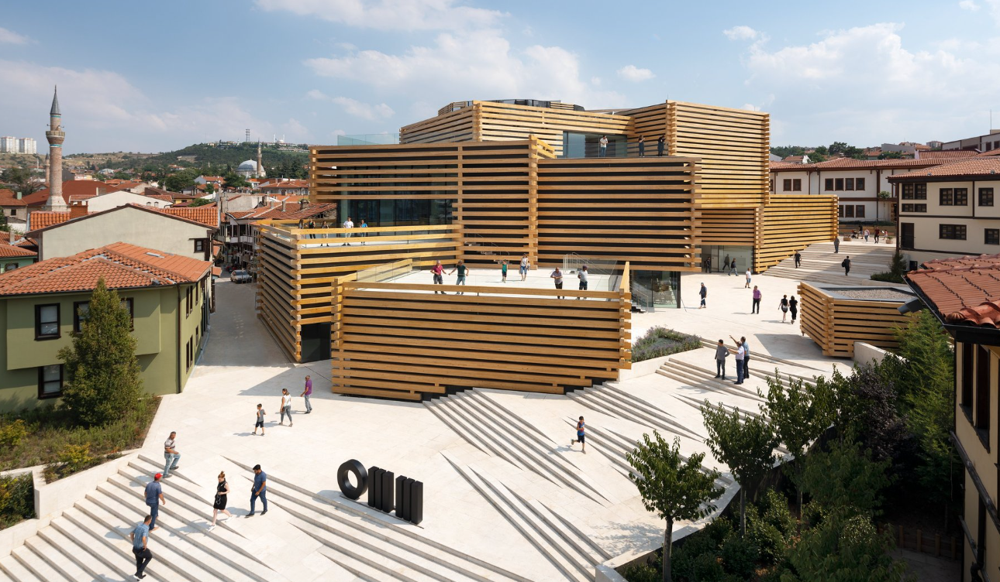

ODUNPAZARI
Şehrin ilk yerleşim yeridir.
Eskişehir kent merkezinde yer alır ve diğer ilçelere göre yükseltisi daha fazladır.
Bir rivayete göre Eskişehir'e yerleşmeyi düşünen ilk halk Odunpazarı ve
şimdiki Porsuk Çayı'nın olduğu bölgeye birer koyun ciğeri asarlar.
Hangisi çok dayanırsa orayı yerleşim bölgesi seçeceklerdir.
Odunpazarı'na asılan ciğer daha geç bozulur ve ilk yerleşim burada oluşur.
KÜLTÜR
Odunpazarı'nın tarihî kent merkezi,
UNESCO tarafından 2012'de Dünya Mirası Geçici Listesi'ne dahil edildi.
2019 yılında ise Japon mimar Kengo Kuma'nın tasarladığı Odunpazarı Modern Müze açılmıştır.
Bununla birlikte Türkiye'de kurulacak ilk "Kedi Müzesi" için de hazırlıklar başlamıştır.

TURİSTİK YERLERİ GÖRMEK İÇİN TIKLAYINIZ!!!!